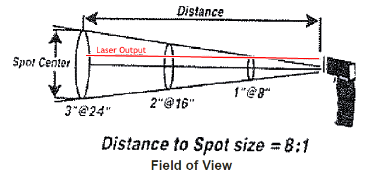
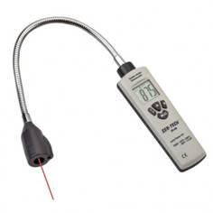

Go Home
Site Map
Go Home
Site Map
IR thermometer units
Now that IR thermometer are under $50-100, even lower, some notes you should know before buying and using the unit...
Many people's think that using an IR thermometer unit is a point and click operating and it is to a point. For most accurate measurement, you need to account distant to target and size of target also.
Why? Many IR units can read a wide area... see IR unit instructions. (Typical example below.) More distance = bigger area to read = bigger area can skew small part to read and give you a wrong temp. Keep to same distance each time you read the target(s).
IR thermo has a laser to aim? (And you want laser pointer when buying the unit.) Make sure laser is pointing to same area on target. It does matter too... Want to measure brake rotors? Make sure laser is pointing to same area on all rotors, Center with pads travel on rotor. (Rotor's clean area.) But note that Tire design can keep your IR unit from "seeing" the rotor well.

Source: Harbor Freight, Manual for SKU 96451 page 4
Note too that IR units, especially cheap ones, are not terribly accurate. Typical accuracy:
± 4° F below 212° F
± 2% reading above 212° F
Source: Same above, page 3
Still IR unit accuracy is good enough for most auto work, like brake work.
Example, If the axle has one side hotter than other side,
more than 10-15oF different...
Check Pad Clearance on both, especially in rear. To much pad clearance can let
rotor to cool more. Too tight mean dragging pads.
Check all 4 sliders. Sticking sliders can drag outside pad.
Check Ebrake parts for sticking etc...
Buying a new one?
You want a laser pointer to aim the Tube that does the reading.
A flexible one is better for auto work, such as Model 94233 from Harbor Freight below.

Fiero brake rotors runs hotter in rear. Why?
Back rotors are thicker then front... Thinner rotor can unload heat faster Plus front has better interface to heatsink Alloy wheels and hub area and can watch front to cool off faster then back too.